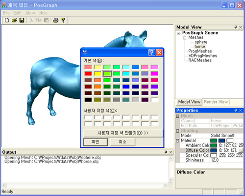
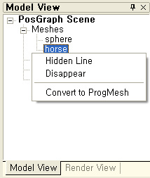
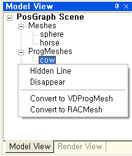
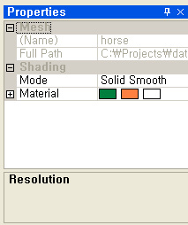
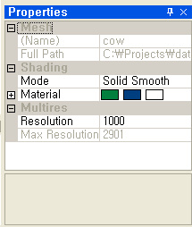
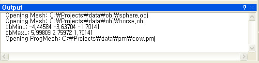

졸업하기 전에 꼭 해놓고 싶은 것이 있었는데, 내가 짰었던 그리고 앞으로 짤 프로그램들을 하나의 프래임 워크로 쉽게 통합할 수 있는 개발 환경을 만들어 놓는 것이었다.
그동안 블로그질도 좀 뜸하게 하면서 여기 좀 매진 했는데, 원하는 개략적인 산물이 나왔다.
프레임워크는 이름하여 PosGraph :)
프로그램의 레이아웃은 Visual Studio .NET 2003을 모방했는데, 일반적인 그래픽스 프로그램 (특히, 연구실에서 작성하는 논문용 프로그램) 의 개발환경이 이 레이아웃에 적합할 것 같다는 개인적인 판단에서다.
레이아웃은 scene viewer, model/render view, property view, 그리고 output view로 4가지로 크게 나누었다 (아래 그림 참조).
- Scene viewer는 3D scene에 존재하는 물체가 렌더링되는 부분
- Model/render view는 scene에 존재하는 3D model, light, material 등을 선택할 수 있는 부분
- Property view는 선택된 객체의 속성을 보여주고 그 속성을 바꿀 수 있는 인터페이스를 제공
- Output view는 프로그래머가 코드의 중간중간 남긴 log 메시지를 보여주는 부분
지금까지 구현된 기능은...
i) property view를 통해서 선택된 물체의 속성 (material color, 3d position, etc.)을 바꿀 수 있다.

ii) model view에서 물체를 선택하고 마우스 우클릭을 통해 context menu를 띄울 수 있다.
(객체의 type에 따라 context menu의 내용이 다르다)
[raw mesh의 경우]

[multiresolution mesh의 경우]

iii) Property view에는 선택된 객체의 type에 따라 다른 category의 property가 보여진다.
[raw mesh의 경우]
[multiresolution mesh의 경우]

iv) code의 특정부분에서 std::cout 으로 streaming한 결과는 output window에 찍힌다.
(이것으로 쉽게 printf 스타일 디버깅이 가능하다)

가장 어려운 부분이 될 것이라고 예상했던 property view 부분은 의외로 Xtreme toolkit Pro에 있는 property grid 기능을 이용하여 의외로 가장 쉽게 해결되었다. 물론 graphics 프로그램에 맞게 vector/matrix, 및 material 등의 객체에 대한 property에 접근할 수 있는 grid item 객체는 내가 다시 다 손을 봐서 만들어야 했다.
예상보다 가장 어려웠던 문제는 Output view 기능을 구현하는 것.
원래 내가 원했던 기능은 프로그램 내에 std::cout을 통해 문자열을 streaming을 했을 경우, console이 아니라 특정 window (여기서는 output window)에 그 문자열이 쓰이는 것이었다. 사실 내가 MFC 사용에도 별로 능숙하지 못한데다가, 일반적으로 win32의 windows programming에서는 console out이 무시되는 특성까지 있어서 예상외로 내가 가져다 쓸만한 코드를 찾는게 쉬운게 아니었다. (덕분에 여러 개발자 웹사이트를 뒤지면서 win32 windows programming에서의 console 기능에 관한 공부를 할 수 있었서 좋긴했지만 -_-;;)
뭐 여튼 이리저리 고생끝에 딱 구미에 맞는 코드를 찾아 냈는데 그게 바로 CEditLog이다. 이 클래스 디자인은 내가 원하는 기능과 딱 맞아 떨어졌는데 std::cout의 ostream을 redirection함으로써 프로그램 상의 어떤 부분에서 std::cout으로 streaming이 되더라도 그 결과가 특정 window (여기서는 output view)에 찍히게 된다.
정말 cool하지 않은가!!!